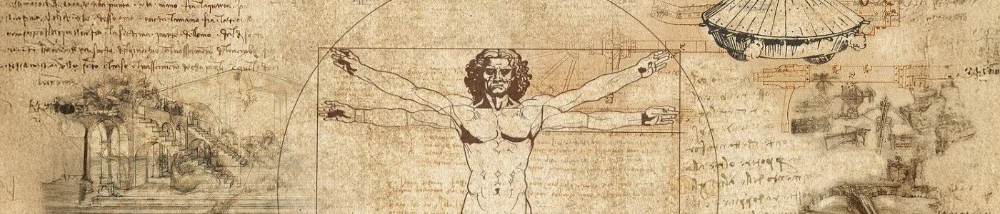

기업이념·CI
삼양식품의 창업정신은 정직과 신용입니다.
기업이념
Slogan
Square the Circle
불가능의 룰을 깨다.
고대 기하학의 3대 난제 중 하나,
“주어진 원과 같은 넓이의 정사각형을 그려라(Square the Circle)”
레오나르도 다빈치는 인체의 기하학적 비율에 대한 고찰을 담은
‘비트 루비 안 맨(Vitruvian Man)’에 황금비율이란 아이디어를 접목해
해결 불가능한 문제에 대한 새로운 솔루션을 제시했습니다.
발상의 전환을 통해 문제를 해결하고자 했던 르네상스 시대의 과학자처럼
삼양식품은 앞으로 다양한 시도, 과감한 도전을 통해 불가능을 능가하는
참신한 솔루션을 만들어 나갈 것입니다.
불가능의 룰을 깨는 부단한 노력으로 더 새로운 가능성을 계속해서 열어가겠습니다.
Vision
Food for Thought
삶과 미래를 채우는 자양분이 되는 기업
대한민국 최초의 라면, 최초의 건면, 최초의 컵라면까지.
참신한 발상과 아이디어로 새로운 음식의 영역을 전달해 온 삼양식품의 발자취는
세상에 던지는 새로운 화두,
그 자체였습니다.
60년이 지난 지금 ‘파이어 누들 챌린지(Fire Noodle Challenge)’로
K-Spicy의 아이콘이 된 불닭브랜드를 통해
삼양식품이 만들어온 새로운 식문화는
이제 전 세계인이 함께 즐기는 정서적인 양식으로 발전해 나가고 있습니다.
시대의 변화에 따라 세상에 새로운 음식의 가치를 제시하는 삼양식품.
이제 우리는 모두의 일상 속에서 때로는 위로와 즐거움으로,
때로는 사회를 변화시킬 새로운 패러다임으로,
더 풍성한 삶과 미래를 위한
‘생각할 거리’ 가 되겠습니다.
사람들과 세상을 더 건강하게 하는 자양분이 되는 기업, 삼양식품이 지향하는 비전입니다.
Culture
Square-Headed & Round-Minded
냉철한 사고방식 & 열린 마음가짐
냉철한 사고방식
Square-Headed
인간과 자연의 조화를 위해 노력합니다.
Human & Nature-centric Thinking
소비자와의 소통, 연구로 공감대를 형성합니다.
Sympathy from Collective Bonding
열린 마음가짐
Round-Minded
더 큰 진화를 위해 스스로 객관적으로 살펴봅니다.
Constructive Criticism for Improvement
혁신하기 위해 과감히 생각합니다.
Endless Daring to Innovate
CI
혁신적인 기술과 포용적인 사고로 새로운 식문화를 만들어 나가는 삼양식품 그룹의 정신을 시각화한 것으로
밝고 화사한 Evolving Orange 색을 적용하여 식문화와 테크놀로지를 리드하고 혁신하는 그룹의 이미지를 담았습니다.
질서와 혁신의 네모.
과학과 연구.
삼양의 기술력.
무한한 가능성을 의미하는 흰 바탕.
아이디어와 기술의 만남으로 비롯되는
새로운 변화.
포용과 창의성의 동그라미.
가능성과 공감대.
삼양의 식문화.
Primary
Secondary